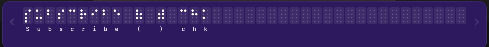
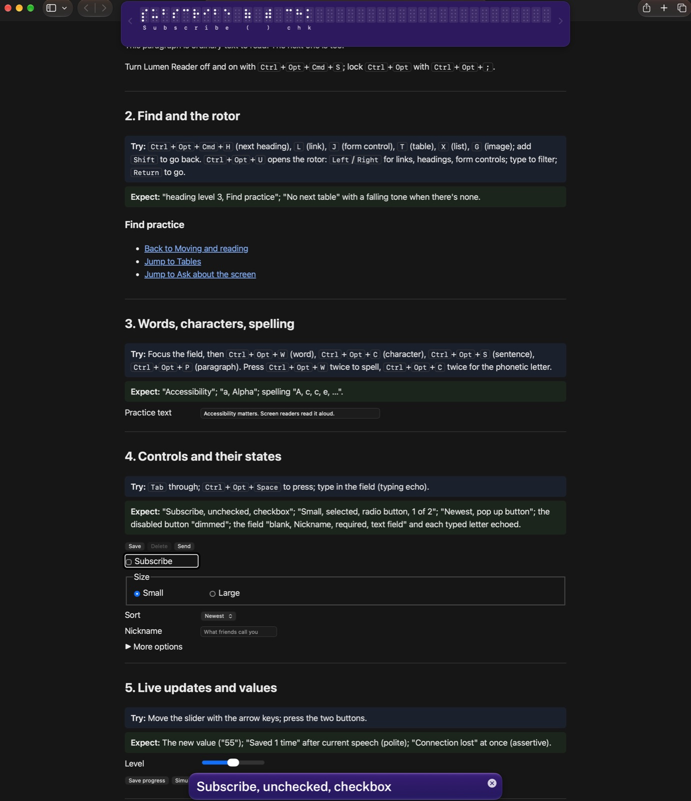
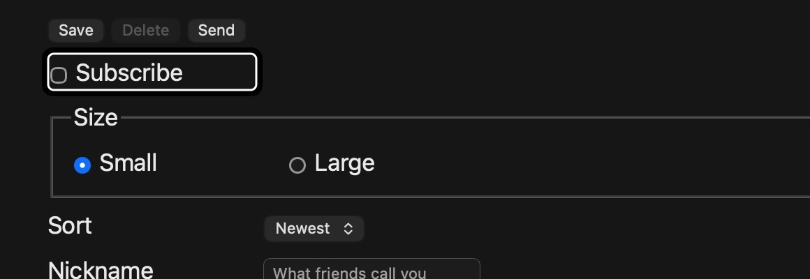
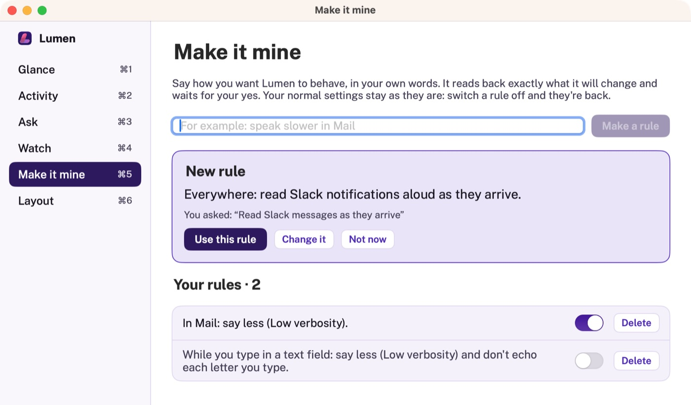

Lumen Reader
A screen reader for macOS that can also answer questions about your screen, take dictation, fill forms, describe pictures and give you a glance at your whole Mac. All of it runs on your Mac.
In private testing · macOS 14 or later · Ctrl+Opt keys, the same as VoiceOver's
What it looks like on a page
The feature tour in Safari, with Lumen Reader's cursor on a checkbox. The same item is spoken, shown in the caption panel and shown in braille.



Hear every control clearly
Lumen Reader follows keyboard focus and says what each control is called, its state and its type, for example "Subscribe, unchecked, checkbox". It runs from the menu bar and the Dock.
-
Its own cursor
Move item by item with a cursor drawn on screen. The page scrolls to keep it in view.
Ctrl Opt + arrows
-
Find and the rotor
Jump to the next heading, link, form control, table, list or image, or list them all, type to filter and go.
Ctrl Opt U
-
Tables
Move by cell and hear the column header or the whole row. Ask a question like "Which plan is cheapest?"
Ctrl Opt Shift T
-
Reading mode
Hear just the main content as prose, without the menus, banners, sidebars and footers.
Ctrl Opt Shift R
-
Paragraph to letter
Read a paragraph, sentence, word or character, spell a word or hear phonetic letters.
Ctrl Opt P / S / W / C
-
Captions and braille
The caption panel shows everything spoken, highlighting each word as it's said. The braille panel shows the current item as an 8-dot braille display would.
Both in the menu-bar menu
Ask about the screen. Just say it.
Type a question or hold Ctrl Opt and ask it out loud, for example "Where is the search field?" The cursor moves to the item the answer is about.
-
Ask and summarise
Get a summary of the screen, or ask questions with follow-ups like "What is the second one about?"
Ctrl Opt /
-
Voice commands
"Change speech rate to 60", "turn off hints", "press Save draft", "open Safari".
Hold Ctrl Opt in the ask box
-
Dictation
In a text field, hold Ctrl Opt, speak, then let go. Your words are typed in.
Recognised on your Mac
-
Describe pictures
Hear a description of the image, video frame or chart under the cursor.
Ctrl Opt Shift L
-
Fill and check forms
Fill empty fields from your saved details or what you say, after hearing the plan. It never submits. Before you send, it catches empty required fields, typos and a missing attachment.
Ctrl Opt Shift F / C
-
Names for unlabelled buttons
A button with no name gets a guessed one from the text around it, and Lumen Reader tells you it's a guess.
"Send message, guessed name"
Take in your whole Mac at a glance
A sighted person looks over the screen in a second: what's open, what needs them, where things are. The companion window gives you the same overview, in a window you move through with Lumen Reader or with VoiceOver. Open it from the Dock icon, or with Lumen Reader press Ctrl Opt Shift G twice. Using it with VoiceOver

-
Glance
Where you are, what needs you (dialogs, unread badges) and every open window, most important first. Press Ctrl Opt Shift G once to just hear it.
Cmd 1 in the window
-
Activity
What happened while you were busy: notifications, alerts, apps that came forward and everything Lumen Reader said, with a search.
Cmd 2
-
Ask about your Mac
"Which Finder windows are open?" "Did anyone message me?" Answers come with Go to buttons that take you there.
Cmd 3
-
Watch
"Tell me when this finishes." Lumen Reader keeps an eye on a download, a build or a page, or waits for a message from someone, and tells you once.
Ctrl Opt Shift W, or Cmd 4
-
Make it mine
"Speak less while I'm typing." "Read Slack messages as they arrive." Rules sit on top of your settings, so switching one off puts things back.
Cmd 5
-
Layout
Where things are on each display: "Safari fills the left two-thirds. Slack is on the right." Each of nine areas says what's there and takes you to it.
Cmd 6
What you ask stays on your Mac
The AI features use only what's built into macOS: Apple's on-device language model, speech recognition and Vision.
- No network requests. Nothing you ask, say or show leaves your Mac.
- Nothing to set up. No AI provider, no account and no API key.
- Your history is yours. The companion's Activity is kept in a file only you can read, for a day. Turn it off or clear it from the menu.
- Works without AI too. Moving and reading, find, the rotor, tables, captions, Check before sending, the accessibility audit, and the companion's Glance, Activity, Watch and Layout work on any supported Mac.
| Feature | Needs |
|---|---|
| Ask, summarise, guessed names, asking about your Mac | macOS 26 with Apple Intelligence on |
| Rules in your own words | Common requests work anywhere; unusual ones need macOS 26 with Apple Intelligence on |
| Dictation and voice commands | macOS 26 and Microphone permission |
| Describe a picture | macOS 27 with Apple Intelligence on, and Screen Recording permission |
| Text in a picture | Screen Recording permission |
Audit any page or app
Press Ctrl Opt Shift A on any page or app. Lumen Reader checks it from the accessibility tree, the way a screen reader sees it, says a summary and saves a report with WCAG references.
- Controls and fields with no name or label
- Images with no description
- Vague or ambiguous links
- Missing or skipped heading levels
- Targets under 24 points that are too close together
- A missing page title
5 issues: Name 2, Heading levels 1, Image description 1, Link purpose 1.
| Problem | WCAG |
|---|---|
| A button has no name. | 4.1.2 |
| A checkbox has no name. | 4.1.2 |
| An image has no description. | 1.1.1 |
| A link says only “click here”. | 2.4.4 |
| A level 4 heading follows a level 2 heading (level 3 skipped): “Delivery”. | 1.3.1 |
Colour contrast, keyboard traps and caption quality still need a person, or other tools, to check.
Good to know
If you use VoiceOver
Does it replace VoiceOver?
No, and you don't have to choose. Lumen Reader is an experiment and a learning tool: it doesn't support braille displays or trackpad gestures yet, though a braille panel shows on screen what a display would. Keep VoiceOver as your screen reader and use the companion window alongside it, or switch to Lumen Reader when you want to try it.
Can I use the companion window with VoiceOver, without Lumen Reader reading?
Yes. While VoiceOver is on, Lumen Reader pauses and stays quiet, and the companion window is an ordinary Mac window that VoiceOver reads like any other. Open it from the Dock icon or with Cmd Tab. Cmd 1 to Cmd 6 go to its sections, and each one lands on a short summary that VoiceOver reads at once. Cmd R looks again and Cmd W closes it. Its headings are marked as headings, with levels, for VoiceOver's rotor and heading keys.
What does the companion add to VoiceOver?
VoiceOver reads the window you're in, one item at a time. The companion gives you the whole Mac at once, the way a sighted person takes it in with a glance.
Glance says where you are, what needs you (open dialogs, unread badges) and every open window, most important first. Activity keeps what happened while you were busy: notification banners that vanish after a few seconds, alerts, and apps that came forward, for a day, with a search. Ask about your Mac answers questions like "Which Finder windows are open?" in plain words. Layout says where things are on each display and what's hidden behind what. Every window and app it mentions has a Go to button that brings it forward, so you can go straight there.
What keeps working in the background while VoiceOver is on?
Lumen Reader keeps running, quietly. It keeps recording Activity, so the companion is up to date whenever you open it, and watches you've set keep watching. Because VoiceOver only speaks for the app in front, a watch that finishes while VoiceOver is on doesn't speak: it's listed in Activity and under Told you in the Watch section instead. Your Make it mine rules change how Lumen Reader speaks, so they wait until you switch to it.
How do I switch between VoiceOver and Lumen Reader?
Press Cmd F5, the same key that turns VoiceOver on and off. When VoiceOver goes off, Lumen Reader plays a short rising tone and takes over where you are: "Lumen Reader on", then the item you're on. Press Cmd F5 again to go back. You can also choose Switch to Lumen Reader in the companion window, or say or type "switch to VoiceOver" in Lumen Reader's ask box. The first two times you switch, Lumen Reader also reminds you how to switch back.
Does Ask about your Mac need anything extra?
It uses Apple's on-device model, so it needs macOS 26 with Apple Intelligence on, like the rest of Lumen Reader's AI features. Glance, Activity, Watch and Layout work on any supported Mac, with VoiceOver or with Lumen Reader.
Everything else
Will the keys feel familiar?
Yes, if you use VoiceOver. Commands use Ctrl Opt, the keys VoiceOver calls VO, and moving, finding and the rotor work much the same way. Turn Lumen Reader off or on with Ctrl Opt Cmd S. The feature tour has every key on one page.
Does it need an internet connection or an account?
No. Lumen Reader makes no network requests. The AI features use Apple's on-device model, speech recognition and Vision, so there's no AI provider, account or API key.
Which Macs can run it?
Any Mac with macOS 14 or later. Asking about the screen, dictation and voice commands need macOS 26 and a Mac with Apple Intelligence (Apple silicon, M1 or later). Describing pictures needs macOS 27.
What is the Dock icon for?
It opens the companion window: a glance at your Mac, recent activity, questions about your Mac, watches, your rules and where things are on your screens. It works with VoiceOver or with Lumen Reader. Lumen Reader keeps running while the window is closed; Cmd W closes it.
Which apps does it work with?
Any app that uses Apple's accessibility APIs. It's tested in Safari, Chrome, TextEdit and the Cmd+Tab switcher. In Safari, finding headings and links uses WebKit's own search, so it's fast on long pages.
How do I uninstall it?
Open the installer again and choose Customize › Uninstall Lumen Reader. That removes the app, its settings and its permission entry.
In private testing for now
Lumen Reader is being tried out by a small group of screen reader users before anyone else, so there's no public download yet. When it's ready for more people, the download will be here.
See what it can do
Every feature on one page, with what to try and what you'll hear.